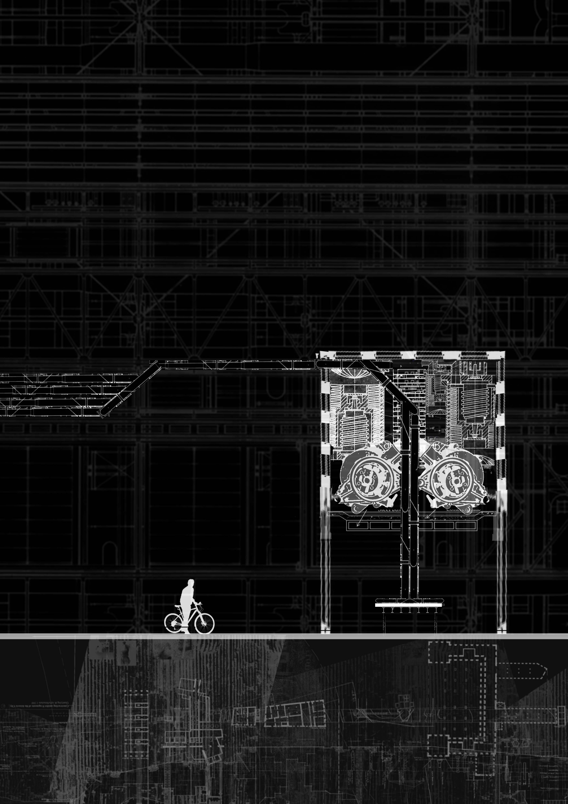
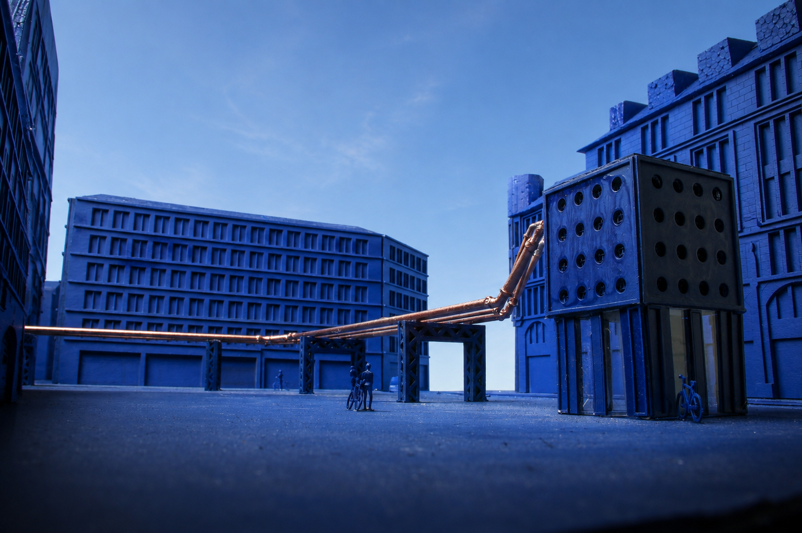
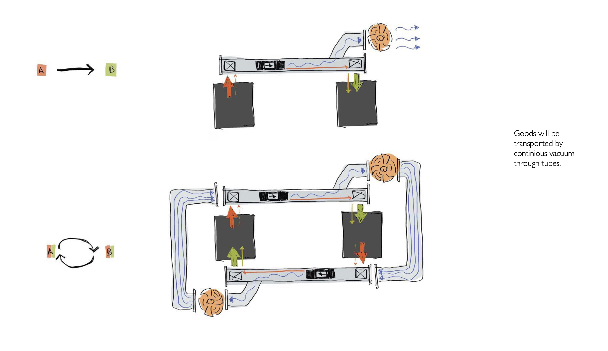
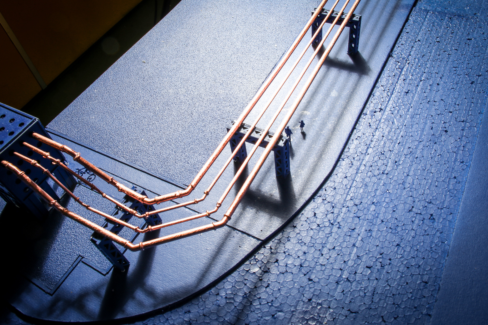

Nowadays, for reasons such as the Corona pandemic or less and less time in everyday life, more and more delivery services are being used. This shifts the storage of small goods (previously stored in households) to the roads.

This just-in-time principle leads to congested city streets by cars, bike couriers etc. A new infrastructure is introduced that reduces traffic on the roads and takes over the storage and delivery of small goods. The infrastructure is connected to the rail network and has links to the center of the city as well as the outskirts. The railway stations are connected and provide the link between the otherwise linear strands.




Goods are transported by vacuum through tubes. At the end of the tube there is a checkpoint. This consists on the one hand of a machine room with the technol- ogy to drive the infrastructure and on the other hand of a kiosk for receiving and delivering the goods.

From the checkpoints there is a fine distribution, where the orders are brought to the individual addresses by bicycle. Thus, there are only a certain number of couriers who take care of the deliveries of all the shops in the vicinity of a check- point. The infrastructure covers the busy roads, so the goods are transported through the tubes avoiding congestions, instead of adding couriers to the traffic. The system works in both directions, so the infrastructure runs in a cycle. It relieves the strain on traffic and enables goods to be transported quickly from the city center to the outskirts and vice versa.
